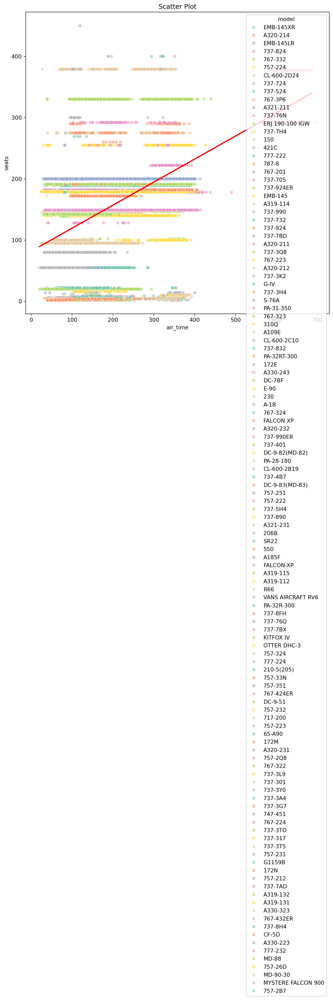
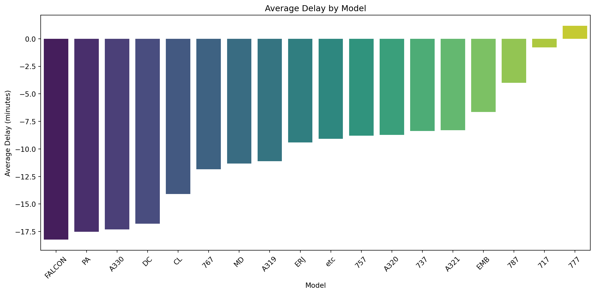
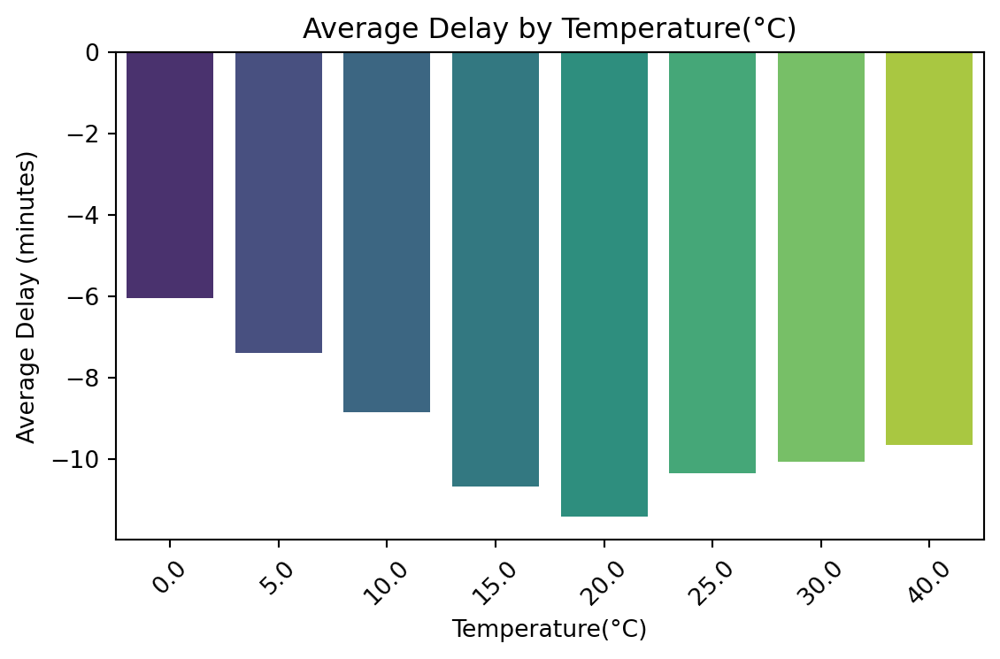
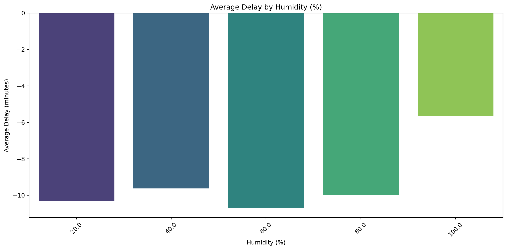
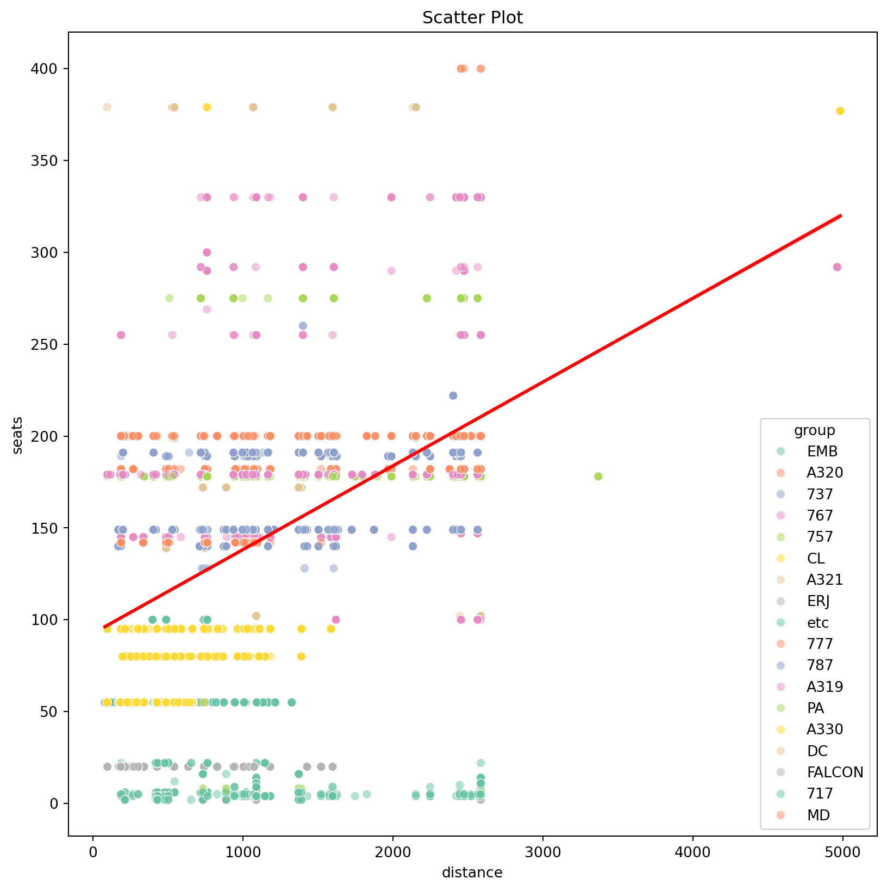
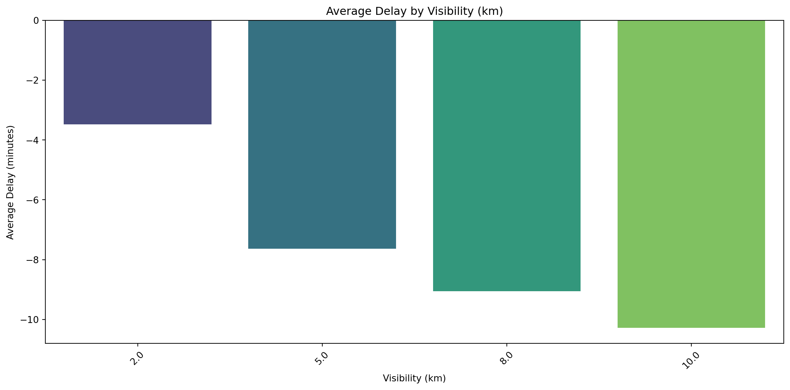
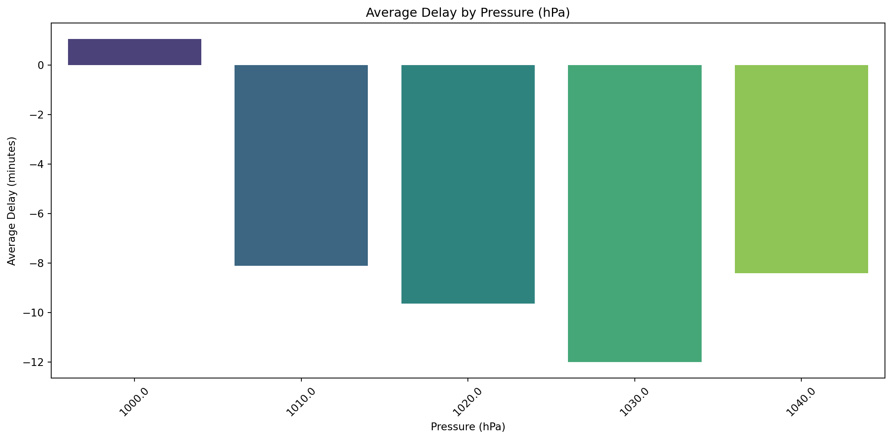

New York Flight Data Analysis
sub title
TEAM EE
about TEAM
박수현 이주형 오윤지 조익현
NYC flights data 를 알아보자!
nycflights13 - flights, planes
info()
| Column | Non-Null Count | Dtype | |
|---|---|---|---|
| 0 | year | 336776 non-null | int64 |
| 1 | month | 336776 non-null | int64 |
| 2 | day | 336776 non-null | int64 |
| 3 | dep_time | 328521 non-null | float64 |
| 4 | sched_dep_time | 336776 non-null | int64 |
| 5 | dep_delay | 328521 non-null | float64 |
| 6 | arr_time | 328063 non-null | float64 |
| 7 | sched_arr_time | 336776 non-null | int64 |
| 8 | arr_delay | 327346 non-null | float64 |
| 9 | carrier | 336776 non-null | object |
| 10 | flight | 336776 non-null | int64 |
| 11 | tailnum | 334264 non-null | object |
| 12 | origin | 336776 non-null | object |
| 13 | dest | 336776 non-null | object |
| 14 | air_time | 327346 non-null | float64 |
| 15 | distance | 336776 non-null | int64 |
| 16 | hour | 336776 non-null | int64 |
| 17 | minute | 336776 non-null | int64 |
| 18 | time_hour | 336776 non-null | object |
| Column | Non-Null Count | Dtype | |
|---|---|---|---|
| 0 | tailnum | 3322 non-null | object |
| 1 | year | 3252 non-null | float64 |
| 2 | type | 3322 non-null | object |
| 3 | manufacturer | 3322 non-null | object |
| 4 | model | 3322 non-null | object |
| 5 | engines | 3322 non-null | int64 |
| 6 | seats | 3322 non-null | int64 |
| 7 | speed | 23 non-null | float64 |
| 8 | engine | 3322 non-null | object |
| Column | Non-Null Count | Dtype | |
|---|---|---|---|
| 0 | origin | 26115 non-null | object |
| 1 | year | 26115 non-null | int64 |
| 2 | month | 26115 non-null | int64 |
| 3 | day | 26115 non-null | int64 |
| 4 | hour | 26115 non-null | int64 |
| 5 | temp | 26114 non-null | float64 |
| 6 | dewp | 26114 non-null | float64 |
| 7 | humid | 26114 non-null | float64 |
| 8 | wind_dir | 25655 non-null | float64 |
| 9 | wind_speed | 26111 non-null | float64 |
| 10 | wind_gust | 5337 non-null | float64 |
| 11 | precip | 26115 non-null | float64 |
| 12 | pressure | 23386 non-null | float64 |
| 13 | visib | 26115 non-null | float64 |
| 14 | time_hour | 26115 non-null | object |
Subject
지연시간(arr_delay, dep_delay)과 날씨(weather) 간 상관관계 분석
flights(airtime)과 planes(seats)은 무슨 관계일까?
데이터 확인
지연시간에 이상치가 있다!
| Statistic | Value |
|---|---|
| count | 328,521.000 |
| mean | 12.639 |
| std | 40.210 |
| min | -43.000 |
| 25% | -5.000 |
| 50% | -2.000 |
| 75% | 11.000 |
| max | 1301.000 |
| Name: dep_delay |
| Statistic | Value |
|---|---|
| count | 327346.000000 |
| mean | 6.895377 |
| std | 44.633292 |
| min | -86.000000 |
| 25% | -17.000000 |
| 50% | -5.000000 |
| 75% | 14.000000 |
| max | 1272.000000 |
| Name: arr_delay |
데이터 확인
weahter(wind_speed) 풍속에 이상치가 있다!

| Statistic | Value |
|---|---|
| count | 26111.000000 |
| mean | 10.517488 |
| std | 8.539253 |
| min | 0.000000 |
| 25% | 6.904680 |
| 50% | 10.357020 |
| 75% | 13.809360 |
| max | 1048.360580 |
| Name: wind_speed |
전처리에 사용된 함수
# 전처리 함수
def PreProcessing(df, columns):
f_df = df.copy() # 원본 데이터프레임 유지
for column in columns:
desc = f_df[column].describe()
q1 = desc['25%']
q3 = desc['75%']
iqr = q3 - q1
lower_boundary = q1 - (iqr * 1.5)
upper_boundary = q3 + (iqr * 1.5)
# 이상치 제거 적용
f_df = f_df[(f_df[column] >= lower_boundary) & \
(f_df[column] <= upper_boundary)]
return f_df여러 개의 컬럼에 대해 IQR 방식을 사용하여 이상치를 제거하는 함수
Parameters:df (pd.DataFrame): 데이터프레임 columns (list): 이상치를 제거할 컬럼 리스트
Returns: pd.DataFrame: 이상치가 제거된 데이터프레임
전처리
최종 전처리 시작
필요 없는 칼럼 제거
결측치
결측치 확인
| Column | Missing Count |
|---|---|
| dep_time | 8255 |
| dep_delay | 8255 |
| arr_time | 8713 |
| arr_delay | 9430 |
| tailnum | 2512 |
| air_time | 9430 |
| month | 0 |
| day | 0 |
| sched_dep_time | 0 |
| sched_arr_time | 0 |
| carrier | 0 |
| flight | 0 |
| origin | 0 |
| dest | 0 |
| distance | 0 |
| hour | 0 |
| minute | 0 |
| time_hour | 0 |
| Column | Missing Count |
|---|---|
| year | 70 |
| tailnum | 0 |
| type | 0 |
| manufacturer | 0 |
| model | 0 |
| engines | 0 |
| seats | 0 |
| engine | 0 |
결측치 처리
merge
planes_df와 flights_df를 tailnum으로 left join
flights(arr_delay, dep_delay)과 weather(wind_speed) 에 대해 전처리 함수 적용
파생 변수 생성
arr_delay와 dep_delay를 더해서 총 지연시간 delay 변수 생성
이상치가 있는 칼럼 flight(arr_delay), flight(dep_delay), weather(wind_speed)에 대해 전처리를 진행했습니다. IQR을 이용하여 lower boundary를 Q1-(IQR * 1.5)로 설정하고 upper boundary를 Q3+(IQR * 1.5)로 설정했습니다. 해당 범위 안에 있는 데이터만 남기고 나머지는 제외했습니다.
전처리 후 지연시간(delay) 히스토그램



전처리 후 weather(wind_speed) 풍속 히스토그램

month, day, hour 변수와 delay 간 시각화



전체 히트맵

flights(airtime) 칼럼과 planes(seats) 칼럼은 무슨 관계일까?
비행시간과 좌석수 상관계수의 관계
flights(air_time)-planes(seats)
- +0.54의 상관계수를 갖는다. => 비교적 강한 상관계수를 가진다.
- seat(좌석수)가 많은수록 비행시간이 길다.
- 큰 비행기 일 수록 비행 시간이 길다.
flights(air_time)-flights(distance)
- +0.52의 상관계수를 갖는다. => 비교적 강한 상관계수를 가진다.
- seat(좌석수)가 많을수록 목적지까지의 거리가 길다.
- 큰 비행기일수록 목적지까지의 거리가 길다.
air_time-seats의 관계
비행시간(air_time)과 좌석 수(seats)의 관계 시각화 코드
- seats 변수는 대부분 100~200 사이에 집중
- 대부분의 항공기가 중형 크기로 설계되었음
- 좌석 수가 많을수록 비행 시간이 길어지는 경향이 관찰됨
- 속도가 높은 항공기는 비행 시간이 짧거나 특정 좌석 수에 집중되어 있음
- seats와 air_time: 상관계수 +0.52로, 좌석 수가 많을수록 비행 시간이 길어지는 경향이 있습니다.
flights(distance)-flights(seats)의 관계
비행거리와 좌석 수의 관계 시각화 코드
둘 사이의 관계
비행기의 구조적인 측면 멀리 가려면 연료가 많이 필요하다. 연료통이 큰 비행기가 필요하다. 큰 비행기는 좌석수가 많다.
규모의 경제 측면 같은 돈을 내더라도 사람 수가 많으면 멀리갈 수 있다.
지연시간(delay)과 관계가 있는 칼럼은 무엇인가?
Model vs Delay

지연시간에 날씨도 당연히 영향을 미치지 않을까?
우선 화씨를 섭씨로 변환해봅시다!
화씨를 섭씨로 변환
temperature
Dew point

humid

wind_speed

precip
precip
0.0 23881
Name: count, dtype: int64pressure

visib

최종 결론
Conclusion
- airtime이 길어질 수록 시트 수가 많다. 즉 이동한다.

LS Big Data School EE